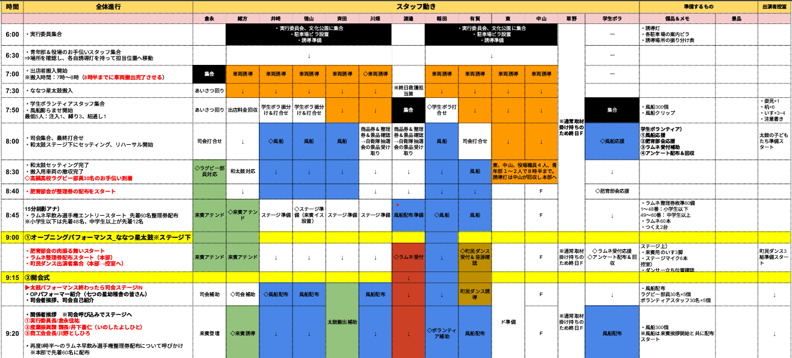
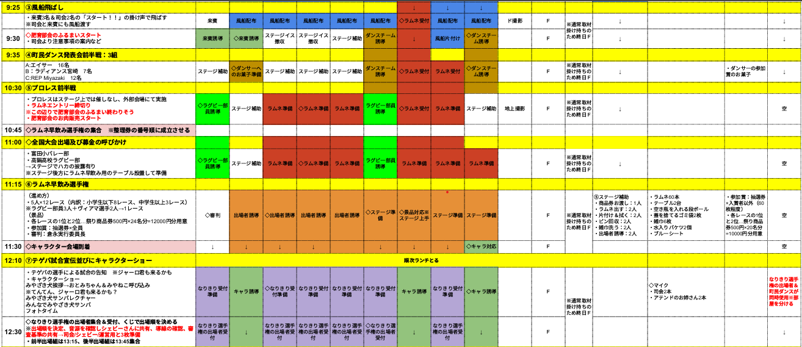
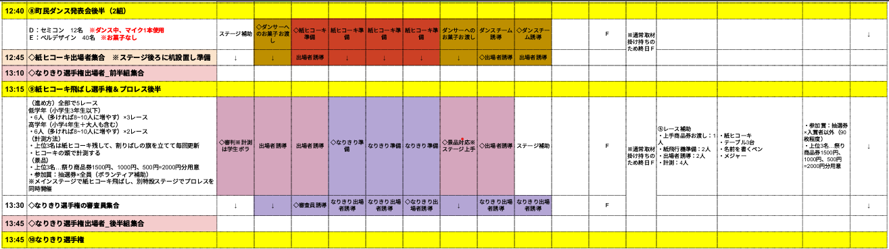
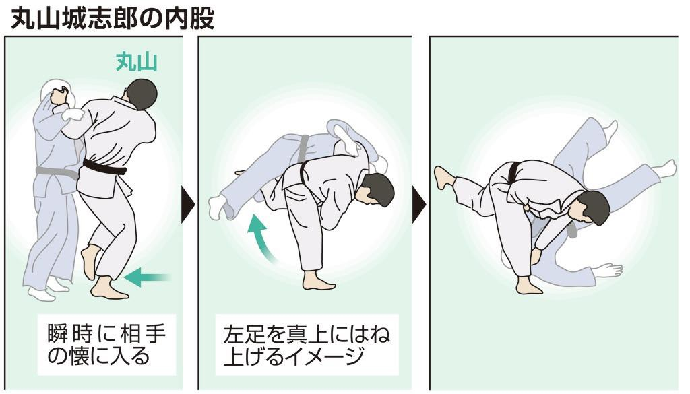
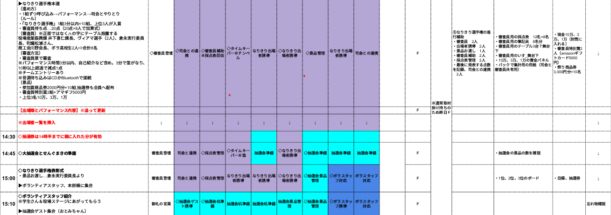
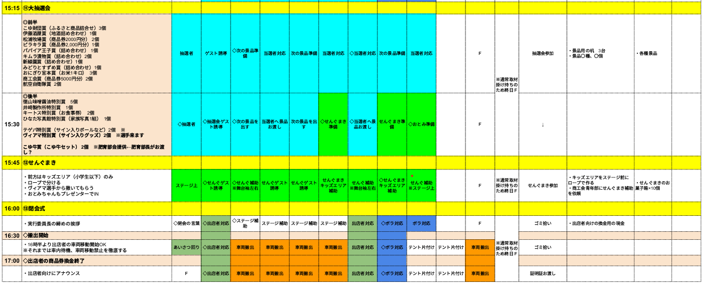
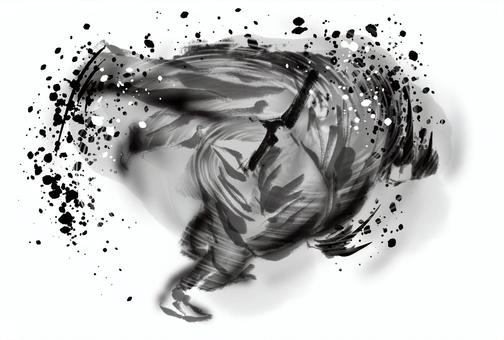

開催概要
毎年更新
日時
20XX年 XX月XX日（X）午前9時〜午後4時
場所
新富町総合文化公園 中央広場新富町上富田 6374
主催
まつりしんとみ実行委員会
内容
きぐるみダンス・和太鼓演奏・なりきり選手権・せんぐまき等。飲食・雑貨・ワークショップ・キッチンカーも出店。
趣旨
関係人口増加を目的とした地域活性化のための祭り。対象：新富町民を主とした児湯地域住民。
「子どもたちが帰ってきたくなる町へ」
◇ 抽選券について
事前に全戸配布済み。当日の各プログラム景品等でも配布。
当日は半券を切るよう適宜アナウンスすること。
担当割
毎年更新
準備期間の担当割（案）
| 担当業務 | 担当者（◎＝主担当） |
|---|---|
| 演目補助・部外補佐関連 | 稲田（学生ボラ）、徳山・斉田（青年部） |
| ボランティア統括 | 中山（撮影）、草野（取材）、東（動画・ドローン） 要ボランティア |
| アテンド | 有馬（前日駐車場・警備員・青年部）、有賀（各出演者・犬）、倉永（来賓） |
| 駐車場・搬入出 | ◎中山（デザイン・発注）、渡邊（看板類）、川畑（サイン類） ◎稲田（XX年はふるまい補佐） |
| 文書・資料作成 | ◎川畑（文書・要項）、稲田（文書）、中山（メール）、井崎（会場図）、有賀（台本） |
| 広報物製作・広報 | ◎徳山・井崎・斉田・川畑 要ボランティア → BOXへ |
| ステージ演目・出演者関係 | ◎倉永（来賓・基地）、緒方（演者）、有賀（犬猫）、稲田・草野 いずれも立案兼務 |
| 一般出店者関連 | ◎緒方・中山（名簿）、川畑（説明会） |
当日担当割（案）
| 担当業務 | 担当者（◎＝現場統括） |
|---|---|
| 全体統括（官公対応含） | ◎倉永 |
| 現場統括・運営全般 | ◎渡邊（現場統括）、中山（広報製作）、緒方（出店者）、川畑（運営全般） |
| 本部・MC補佐 | 倉永、◎緒方、有賀、渡邊（防災救護兼）、稲田 |
| 協賛・ロゴ回収 | ◎倉永、東 |
| なりきり選手権 | ●●・●●（企画立案）、●●・●●（SNS/募集） |
プログラム目安 & 当日フロー
細部の動きは別紙「役割分担表」を確認すること。 ※ 臨機応変に対応。
6:00
実行委・青年部 集合
7:00〜8:00
搬入
7:50
ボランティア集合 → 風船作業
担当：井崎・徳山・稲田 指示
8:00
司会集合 → 最終打ち合わせ（倉永・有賀）
※ 8時半までに搬入車両を退出
8:30
太鼓準備
8:45
ラムネ早飲み 受付開始（先着100人・整理券）
9:10
風船配布（目安300枚、様子を見て増減）
▼ なりきり選手権
・来賓2名＋実行委員長の椅子用意
・審査員用机・椅子を舞台下にセット（A4用紙25枚、マジック7本、審査用紙）
・タイムキーパー1人 / 審査用紙回収2人 / 点数集計
・演者誘導 & 参加賞の商品券渡し
・結果発表：倉永＋ステージ上補佐1、ステージ下補佐1
・審査員用机・椅子を舞台下にセット（A4用紙25枚、マジック7本、審査用紙）
・タイムキーパー1人 / 審査用紙回収2人 / 点数集計
・演者誘導 & 参加賞の商品券渡し
・結果発表：倉永＋ステージ上補佐1、ステージ下補佐1
▼ ラムネ早飲み
6人×10レース（小学生以下8、中以上2）
各レース1・2位 → 祭り商品券各500円（計10,000円分）
ラムネ・机・シート・バケツ・水・雑巾・ごみ袋・養生テープ 準備
各レース1・2位 → 祭り商品券各500円（計10,000円分）
ラムネ・机・シート・バケツ・水・雑巾・ごみ袋・養生テープ 準備
▼ せんぐまき
・菓子準備
・マイク2本をそれぞれ引率役へ渡す
・テゲバ・ヴィアマ選手に撒いてもらう
・マイク2本をそれぞれ引率役へ渡す
・テゲバ・ヴィアマ選手に撒いてもらう
▼ 景品抽選
・机3・景品用意、ステージ前ロープで仕切る・キッズエリア確保
・倉永（MC）、ステージ上補佐3〜4人、下2〜3人
・上位3名：商品券1500円・1000円・500円（計2,000円分）
・換金 / 高鍋高ラグビー告知
・倉永（MC）、ステージ上補佐3〜4人、下2〜3人
・上位3名：商品券1500円・1000円・500円（計2,000円分）
・換金 / 高鍋高ラグビー告知
▼ おとみ・動物 入場
犬＋引率・おとみ・猫＋引率 会場イン。駐車場3台確保。
過剰北部を通ってステージ裏へ（有賀アテンド）。
おとみ着替え → 出演者控室。荷物はスタッフ控室。犬・猫は着ぐるみのまま移動。
過剰北部を通ってステージ裏へ（有賀アテンド）。
おとみ着替え → 出演者控室。荷物はスタッフ控室。犬・猫は着ぐるみのまま移動。
終演後
椅子撤収 / 実行委員長と補佐数名を除き搬出誘導へ
開催変更・中止について
| 状況 | 対応 |
|---|---|
| 雨天 | 予定通り開催 |
| 荒天 | 主催者判断で中止 イベント前日 午前6時に判断 |
| その他やむを得ない事象 | 主催者が開催困難と判断した場合は中止 |
出店者への返金
実行委判断による中止の場合、支払い済みの出店料金は返金。ただし出店準備費・交通費等は事務局負担外。
商品券について
各プログラムで入賞した来場者に 500円分の商品券を配布（当日のみ使用可）。
換金
イベント終了後 17:00 までに運営本部にて換金。必ず釣り銭を用意しておくこと。
搬入出スケジュール & 人員配置
毎年更新
| 日時 | 内容 | 備考 |
|---|---|---|
| XX月XX日（土） 15:00〜18:00 |
前日準備 | 各出店者のみ入場可 |
| XX月XX日（祝日） 7:00〜8:00 |
当日準備 | 6時集合。出店者1台のみ入場可 |
| 9:00〜16:00 | イベント本番 | 8:30までに車両搬出完了 |
| 17:00〜19:30 | 撤収 | 車両搬入は 16:30 以降 |
人員配置（駐車場・誘導）
ハザードランプ点灯・時速15km以下徐行を徹底。公園内は右回り。
①交差点を直進案内（有賀）
②出入口へ案内 → 落ち着いたら③の補助（稲田 / 岩本）
③詰めて停車。満車時は臨時駐車場へ案内。④と入退場の調整（徳山）
④車両の入退場調整、出店位置の告示（緒方）
⑤退場車調整。④の補助（川畑）
⑥振り分け（井崎）
⑦徐行要請・合流調整（二川）
⑧キッチンカー誘導（黒木）
⑨誘導・合流調整（川野）
⑩誘導・合流調整（中山）
⑪誘導・合流調整（通山）
⑫誘導・合流調整（長田）
⑬補助（東）
⑭徐行要請・進入調整（斧）
⑮駐車整理・入退場補助（黒島 / ●●）
⑯徐行要請・進入調整
8時めどに縮小体制（15人 → 5〜7人）
● 井崎・稲田・有賀 → 7:45ごろにボラ対応へ
● 緒方 → ピーク越え次第、本部へ
● 青年部 → ピーク越え次第、1〜2人を残してブース準備へ
● 東・青年部1〜2人・役場4人 → 8時半ごろまで
会場誘導図


全体レイアウト & 駐車場配置
毎年確認
出店者駐車場 → 西駐車場（満車時は北側駐車場へ）
スタッフ駐車場 → きらり横
警備員配置 → 8:00〜17:30（休憩含）
スタッフ駐車場 → きらり横
警備員配置 → 8:00〜17:30（休憩含）
| ① メイン入場口 | ② アンケート |
| ③ スタッフ控室 | ④ 運営本部 |
| ⑤ ステージ | ⑥ 音響 |
| ⑦ 出演者控室（なりきり・ダンス） | ⑧ 仮設トイレ |
| ⑨ キッチンカー | ⑩⑫ 一般出店者 |
| ⑪ テラス席 | ⑬ 行政・地域団体 |
| ⑭ 高城プロレスリング |
全体レイアウト図

駐車場・警備員配置図


出店者配置・一覧・撮影方針
毎年更新（必須）
出店者配置図
ステージ起点に西側・東側で区分


出店者一覧 & 当日ブース案内
飲食・雑貨・ワークショップ → 事前割り振り
キッチンカー → 先着順に奥から誘導（K1、K2…）
キッチンカー → 先着順に奥から誘導（K1、K2…）

来場者による撮影対応方針
「まつりしんとみ」開催中、実行委・撮影スタッフが撮影する写真・動画の著作権は実行委に帰属し、必要と判断した用途にのみ使用することを基本方針とする。
【禁止事項】（見かけたら注意を促す）
- 安全な会場運営の妨げとなるような行為
- 長時間にわたって多くの来場者の視線を妨げる行為
- 脚立等により他来場者の安全を妨げる行為
- 執拗なフラッシュ撮影など出演者の迷惑となる行為
上記以外でも運営に支障をきたすと委員長が判断した場合は個別に注意する。
関係人員・連絡先
毎年更新（必須）
実行委員会 連絡先一覧
| 役職 | 氏名 | 連絡先 |
|---|---|---|
| 実行委員長 | 倉永 | 090-4344-9098 |
| 副実行委員長 | 緒方 | 080-5133-1673 |
| 事務局長 | 井崎 | 090-6765-5631 |
| 委員 | 中山 | 080-1775-4538 |
| 委員 | 徳山 | 090-8768-9456 |
| 委員 | 有賀 | 080-5462-8462 |
| 委員 | 川畑 | 社: 090-5730-0451 私: 080-1795-5533 |
| 委員 | 渡邉 | 080-5242-1718 |
| 委員 | 有馬 | 090-1165-5892 |
| 委員 | 稲田 | 090-1342-9129 |
| 委員 | 草野 | 090-1081-7965 |
| 委員 | 斉田 | 090-8667-3577 |
| 委員 | 東 | 090-8664-5658 |
ボランティア（高校生）対応
集合：7時50分
担当：稲田・井崎・徳山・斉田
- ステージ周り補佐全般
- トイレットペーパーの定期確認
- おとみ引率（徘徊時）
- 会場見回り
- 風船づくり作業
- 整理券配布
- アンケート配布
- その他必要に応じて
関係者駐車場 割り振り
コーン（生涯学習課）… 20個、各種サイン

緊急時対応
毎年番号再確認
宮崎県東児湯消防組合
高鍋警察署
20XX年XX月時点
消火器の位置
→ 各自で事前に確認すること
病人・けが人発生時
- 状況を確認 → 店舗責任者から本部に連絡
- 軽傷・休息が必要な場合：本部を救護室として使用。店舗スタッフまたは実行委が付き添い、常時状態を観察する。
- 急病・重症・緊急の医療対応が必要な場合：迷わず救急車を呼ぶ（119番）
落とし物の対応
開催中 → 会場受付で対応（休憩時に司会より案内）
終了後 → 主催者にて保管
緊急連絡・救護位置図

香盤表（タイムスケジュール）
毎年更新
臨機応変に対応すること



柔道技（演目参考資料）
使用演目に応じて更新・削除可



